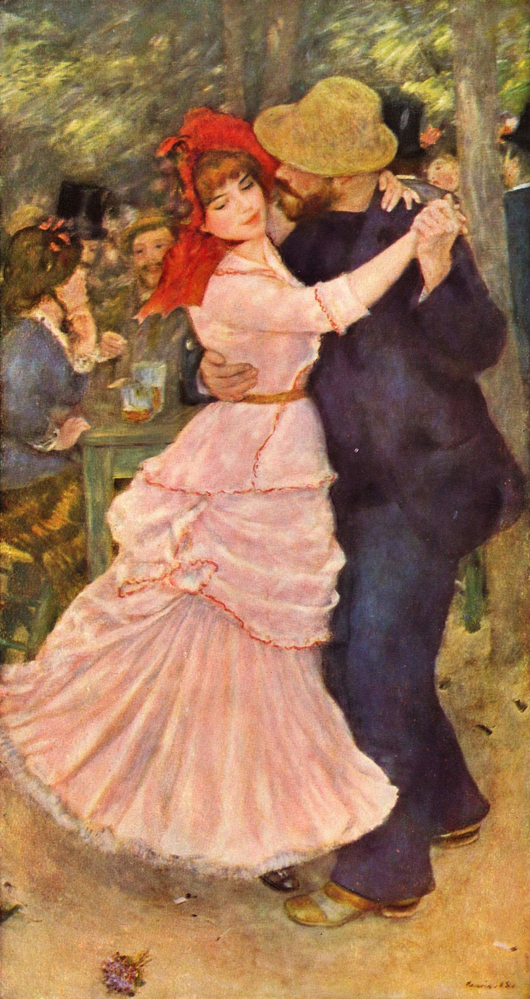

<head>
<meta charset="UTF-8" />
<meta name="keywords" content="drawing, painting" />
<meta name="description" content="drawings by Sunjy" />
<title>Sunjy</title>
<link rel="shortcut icon" type="image/x-icon" href="../../mImages/mCommon/favicon.ico" media="screen" />
<link rel="stylesheet" type="text/css" href="../../mCsses/mCommon/mCssA.css" />
<link rel="stylesheet" type="text/css" href="../../mCsses/mCommon/mCssB.css" />
<link rel="stylesheet" type="text/css" href="../../mCsses/mCommon/mCssC.css" />
<link rel="stylesheet" type="text/css" href="../../mCsses/mCommon/mCssD.css" />
<link rel="stylesheet" type="text/css" href="../../mCsses/mContent/mCssA.css" />
<link rel="stylesheet" type="text/css" href="../../mCsses/mContent/mCssB.css" />
<link rel="stylesheet" type="text/css" href="../../mCsses/mContent/mCssC.css" />
<link rel="stylesheet" type="text/css" href="../../mCsses/mContent/mCssD.css" />
</head>
<script type="text/javascript" src="../../mScripts/mContent/mContentAA.js" /></script>
<script type="text/javascript" src="../../mScripts/mContent/mContentAB.js" /></script>
<script type="text/javascript" src="../../mScripts/mContent/mContentAC.js" /></script>
<script type="text/javascript" src="../../mScripts/mContent/mContentAD.js" /></script>
<script type="text/javascript"></script> 
<script type="text/javascript">
document.write('<div class="mImgAbsolute"></div>');
/*
document.write('<p class="mFontSizeBColor" />From a white paper...</p>');
document.write('<table class="center"><tr><td>');
document.write('');
document.write('</td></tr></table>');
*/
</script>


<script type="text/javascript">
document.write('<p class="mFontSizeBColor" />Dance at Bougival</p>');
document.write('<p class="mFontSizeSColor" />“Dance at Bougival” by Pierre-Auguste Renoir, made in 1883, depicts two of Renoir’s friends dancing at one of the open-air cafés of suburban Bougival, on the Seine outside Paris.  <br><br>Renoir used intense color and lush brushwork to heighten the sense of pleasure conveyed by the whirling couple who dominate the painting.<br><br>The woman’s face, framed by her red bonnet and is the focus of attention. The woman’s body is arched to the dance as she turns her head and looks away, delighted with the pleasure she inspires in her dance partner and herself. Her dress swirls to the rhythms of the dance.</p>');
document.write('<table class="center" /><tr><td>');
document.write('<br>Renoir used intense color and lush brushwork to heighten the sense of pleasure conveyed by the whirling couple who dominate the painting.<br><br>The woman’s face, framed by her red bonnet and is the focus of attention. The woman’s body is arched to the dance as she turns her head and looks away, delighted with the pleasure she inspires in her dance partner and herself. Her dress swirls to the rhythms of the dance." />');
document.write('</td></tr></table>');
</script>


